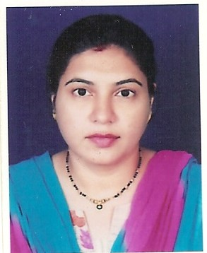

Minal Pradhan

Summary
I am young, enthusiastic and hardworking person with analytical mind.
Education
- B.E. (Electronics) with First class Honours from Mumbai University in May 1995
- Operating System- Unix
- Programming Language-C
- Database-Oracle
- Front end tool- Developer 7.3
Work Expereince
Mosiac LLC- Muscat (Computer Teacher)
May 2005 to Dec 2007
March 2009 to Dec 2010
- Delivery of Futurekids IT Curriculum training at Azzan Bin Qais Pvt. School from KG1 to Grade 12 students as per Futurekids International Curriculum.
- Delivery of Futurekids IT Curriculum from Grade 5 to 8 and IGCSE Curriculum for Grade 9 and Grade 10 at Dorat Al-Khaleej Private School, Al Ghubrah.
- To deliver ICDL (International Computer Driving License) training to higher grades.
- Skills up gradation of teachers in Futurekids Curriculum for school teachers.
- Curriculum Development of Futurekids School IT Curriculum for Oman.
- Examining the proceeding of Cambridge Examination at the centre.
- Evaluation of Cambridge Exam Papers.
- Delivery of MS-Office Training to Corporate, Ministry and individuals at our training centre.
ZEE Interactive Learning System Ltd.(Computer Teacher)
January 2001 to August 2001
- To deliver MSCIT training to ITI College at Vidyavihar.
- Preparation of question paper to monitor student’s progress.
ASEA BROWN BOVERI LTD -Traniee Engineer
May 1996 to May 1997
- Complete design & development of a test jig for Testing of modem card for RTU 2000 This card is used for communication between two remote stations.
- Programming of Pick and Place machine for SMD components.Pick & Place machine is used to pick the components from the reel and place them on appropriate place on PCB. This process is used for surface mounted components.
- Programming and testing on ICCT machine In Circuit Component Testing.
- Preparation of partlist for manufacturing of various module made by ABB.mod.
- Testing of microprocessor-based cards used for communication.
Mathematics tutor
- Year 1995 -1997 grade 11 and 12 state board mathematics.
- Year 2013- 2015 grade 7, 8, 9 CBSE board in Saudi Arabia.
- Year 2017- 2020 grade 6,8,9,10 from ICSE board and grade 9 from CBSE board.
Skills
- Tutored individuals and groups in Basic Algebra, Geometry and Calculus.
- Periodical assessments (e.g., Math worksheets and practice tests) to evaluate students’ mastery of skills.
- Provide alternative methods to explain "difficult" math concepts, recognizing individuals strengths/experience and incorporating these strengths into the lesson.
- Provide alternative methods to explain "difficult" math concepts, recognizing individuals strengths/experience and incorporating these strengths into the lesson.
- Develop teaching materials such as handouts, study materials, and question papers.
- Providing feedback to students using positive reinforcement techniques to encourage, motivate, or build confidence in students.
- Teaching students study skills, note-taking skills, and test-taking strategies.
- Collaborating with students, parents, and teachers to determine student needs, develop tutoring plans, or assess student progress.